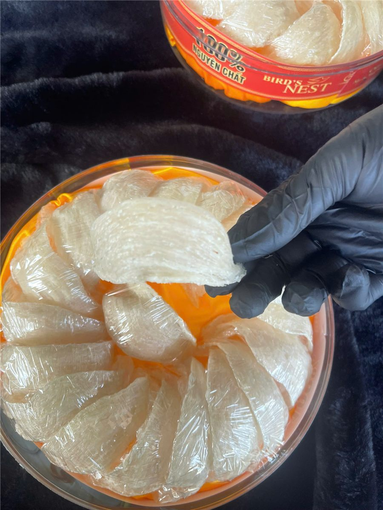
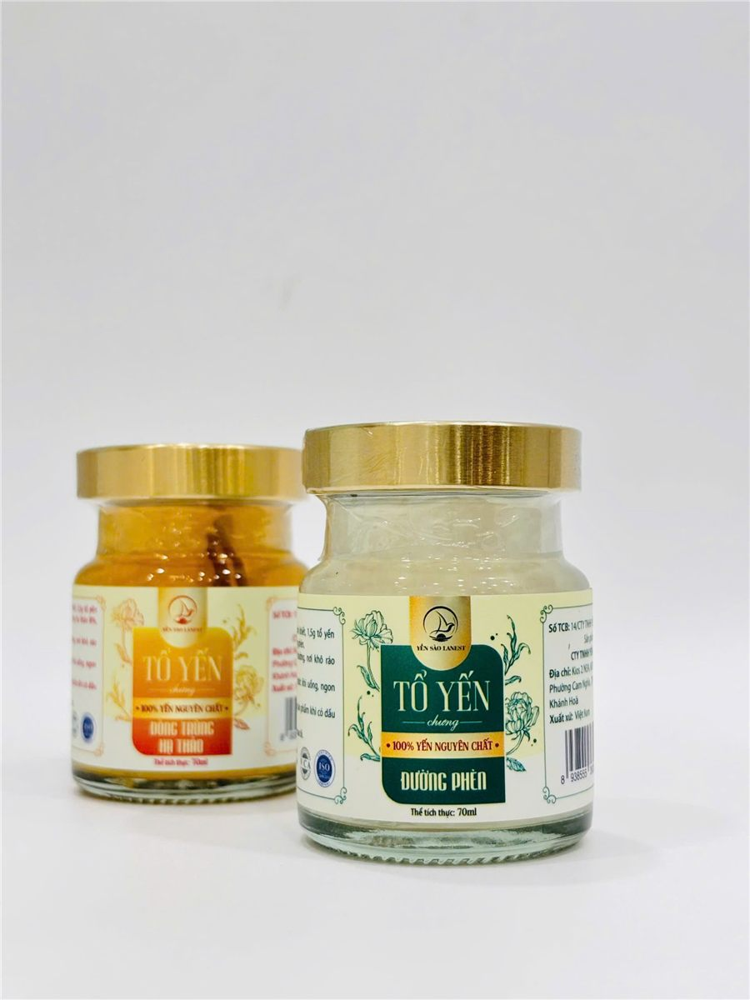

Cách Bảo Quản Tổ Yến Khô Và Yến Đã Chưng Đúng Cách
Yến Sào Lanest · Đăng ngày 28/09/2026

Mua được hộp yến ngon mới là một nửa câu chuyện, nửa còn lại nằm ở cách cất giữ trong nhà. Yến là thứ rất "kỵ" ẩm: để sai chỗ vài tuần là sợi yến có thể ngả màu, có mùi lạ, thậm chí mốc. Bài này tổng hợp cách bảo quản tổ yến cho từng dạng: yến khô (thô và tinh chế), yến đã ngâm nở, yến tự chưng ở nhà và yến hũ chưng sẵn.
Tổ yến tinh chế xếp trong hộp kín, mỗi tổ được bọc riêng để tránh ẩm
1. Ba thứ yến sợ nhất: ẩm, nắng và nhiệt độ cao
Tất cả các cách bảo quản bên dưới đều xoay quanh một nguyên tắc: để yến ở nơi khô ráo, thoáng mát, tránh ẩm và tránh ánh nắng trực tiếp. Đây cũng chính là lý do chính sách đổi trả của Lanest ghi rõ: sản phẩm bị hư do bảo quản sai cách (nơi ẩm ướt, nhiệt độ cao, ánh sáng trực tiếp) thì không thuộc diện bảo hành. Nói cách khác, người làm yến hiểu rất rõ yến hỏng vì đâu, và phần cất giữ ở nhà là phần anh chị tự giữ được.
Vài chỗ trong nhà nên tránh:
- Gần bếp nấu, nồi cơm điện, ấm siêu tốc (hơi nước và nhiệt).
- Bậu cửa sổ, nóc tủ lạnh, nơi nắng chiếu vào buổi chiều.
- Gầm tủ, góc nhà tắm, nơi tường hay bị ẩm.
2. Bảo quản yến khô: tổ yến thô và yến tinh chế
Tổ yến thô (chưa làm sạch) để ở nơi khô ráo, thoáng mát. Khi chưa dùng thì đừng ngâm thử, vì một khi yến đã gặp nước, cách bảo quản sẽ khác hẳn (xem mục 3).
Yến tinh chế (đã làm sạch lông, tạp chất) cần giữ trong hộp kín. Yến tinh chế của Lanest được đóng trong hộp hút ẩm, hộp 50g và 100g. Sau khi mở hộp, anh chị nên lưu ý:
- Đậy kín nắp ngay sau mỗi lần lấy yến, lấy bằng tay khô.
- Yến tinh chế đã mở hộp nên dùng trong vòng 6 tháng.
- Riêng yến rút lông khô loại cao cấp: nên dùng trong vòng 30 ngày sau khi mở hộp.
- Luôn xem hạn sử dụng in trên bao bì. Với Yến Sào Tinh Chế Lanest, hạn sử dụng theo hồ sơ tự công bố là 24 tháng kể từ ngày sản xuất (khi hộp còn nguyên).
Nếu nhà đông người, mỗi tuần chưng vài lần, anh chị có thể chia sẵn yến thành từng phần nhỏ đủ cho một lần chưng. Như vậy hộp chính ít phải mở ra đóng vào, yến ít tiếp xúc với không khí ẩm hơn.
3. Yến đã ngâm nở nhưng chưa chưng kịp
Đây là tình huống rất hay gặp: ngâm yến xong thì có việc đột xuất, không chưng được. Lúc này yến đã hút nước, không thể để ngoài như yến khô nữa.
- Cho yến đã ngâm vào hộp sạch, đậy kín, để ngăn mát tủ lạnh và dùng trong 1–2 ngày.
- Nếu biết chắc vài ngày nữa mới dùng: vắt ráo nước, cho vào túi zip và cấp đông.
Để khỏi rơi vào cảnh này, hãy ngâm vừa đủ lượng định chưng. Thời gian ngâm tùy loại: tổ yến thô cần khoảng 1–2 giờ, yến tinh chế từ khoảng 10 phút với yến vụn đến 30–45 phút với chân yến. Ngâm bằng nước sạch ở nhiệt độ thường, không dùng nước ấm hay nước nóng, và không ngâm quá lâu kẻo yến bở. Chi tiết từng bước có trong bài hướng dẫn chưng yến đúng cách.
4. Yến tự chưng ở nhà để được bao lâu?
Yến chưng xong mà chưa ăn hết thì để nguội, cho vào hũ hoặc chén có nắp đậy kín rồi để ngăn mát tủ lạnh. Về thời gian, các tài liệu hướng dẫn trên web Lanest từng ghi hai mức khác nhau: một trang ghi "tối đa 1 tuần", một trang ghi "1–2 ngày". Trong bài này, Lanest chọn khuyên mức an toàn hơn: dùng hết trong 1–2 ngày.
Vì sao chọn mức ngắn? Yến tự chưng ở nhà không được tiệt trùng như yến hũ làm trong xưởng, mỗi lần mở nắp múc ra là thêm một lần tiếp xúc không khí. Chưng vừa đủ ăn trong 1–2 ngày vừa an tâm, vừa giữ được vị yến ngon nhất. Nếu yến chưng có mùi chua, nước đục lạ hoặc nổi bọt bất thường thì nên bỏ, đừng tiếc.
5. Bảo quản yến hũ chưng sẵn
Yến hũ chưng sẵn của Lanest đóng trong hũ thủy tinh 70ml và được tiệt trùng, nên khi chưa mở nắp chỉ cần để nơi khô ráo, thoáng mát, tránh nắng như yến khô, và dùng trong hạn ghi trên hũ.

Yến hũ chưng sẵn nguyên chất: hũ thủy tinh 70ml, nắp kín, có hạn sử dụng in trên nhãn
Hai lưu ý nhỏ:
- Đã mở nắp thì bảo quản lạnh, không để hũ đã mở ở nhiệt độ phòng.
- Dòng tổ yến chưng nguyên chất ngon hơn khi uống lạnh, nên có thể cho cả hũ vào ngăn mát trước khi dùng. Riêng vị gừng, lắc nhẹ trước khi uống.
6. Kiểm tra yến ngay khi nhận hàng
Bảo quản đúng bắt đầu từ lúc nhận hàng. Khi nhận yến, anh chị nên kiểm tra:
| Bao bì | Hộp, hũ nguyên vẹn, không móp, không vỡ; tem niêm phong còn nguyên |
| Hạn sử dụng | Còn hạn, in rõ trên bao bì |
| Yến hũ | Nắp kín, hũ không rò rỉ |
| Yến tinh chế | Tổ yến không bị ẩm, mốc, không có dị vật |
Lanest khuyến khích quay video lúc mở hộp. Nếu sản phẩm có lỗi do vận chuyển hoặc do nhà sản xuất, anh chị liên hệ trong vòng 15 ngày kể từ ngày nhận hàng để được đổi hoặc hoàn tiền theo chính sách bảo hành. Muốn biết thêm về sự khác nhau giữa các loại yến, anh chị xem bài tổ yến thô và yến tinh chế khác nhau thế nào.
Câu hỏi thường gặp
Yến tinh chế có cần để tủ lạnh không?
Yến khô không cần để tủ lạnh. Chỉ cần hộp kín, để nơi khô ráo, thoáng mát, tránh nắng. Tủ lạnh dành cho yến đã ngâm nở, yến đã chưng và yến hũ đã mở nắp.
Yến đã chưng để tủ lạnh được bao lâu?
Lanest khuyên dùng hết trong 1–2 ngày khi để ngăn mát. Tốt nhất là chưng vừa đủ lượng ăn trong 1–2 ngày.
Yến tinh chế mở hộp rồi dùng trong bao lâu?
Nên dùng trong vòng 6 tháng sau khi mở hộp; riêng yến rút lông khô cao cấp nên dùng trong 30 ngày. Nhớ đậy kín hộp sau mỗi lần lấy.